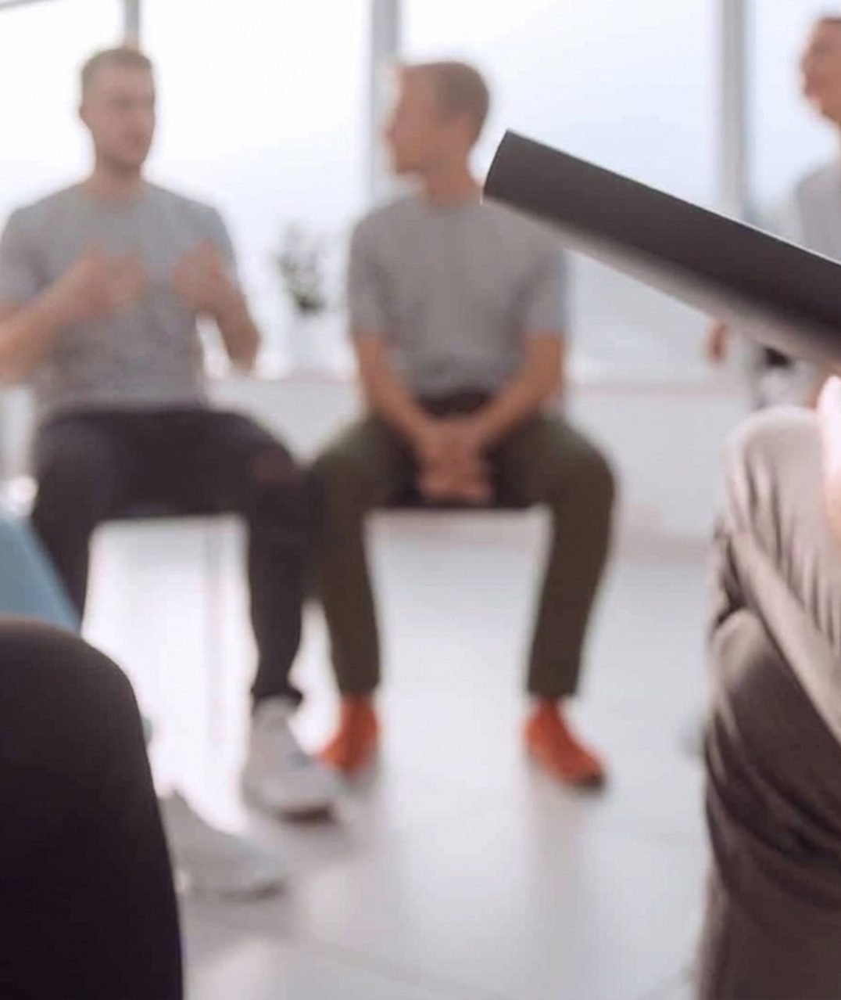

Очная группа
Группа навыков для взрослых с РПП
Практическая программа для взрослых, которым трудно выстраивать отношения с едой и своим телом
- За 10 встреч участники будут учиться замечать сигналы голода и насыщения, распознавать пищевые правила, справляться с импульсами и самокритикой и формировать более гибкое отношение к еде.
- Программа основана на усиленной когнитивно-поведенческой терапии — CBT-E, или КБТ-У, — с интеграцией принципов ACT и элементов схема-терапии
Начало 26 сентября

Над чем будем работать на программе
-
Снижать тревогу и чувство вины вокруг еды
-
Уменьшать частоту и объём переедений
-
Спокойнее чувствовать себя за столом в гостях, кафе и на праздниках
-
Лучше распознавать сигналы голода и насыщения
-
Замечать пищевые правила и не следовать им автоматически
-
Относиться к телу с меньшей критикой и большей поддержкой
Когда программа будет полезна
-
Переедания воспринимаются как «срыв»
Во время еды бывает трудно остановиться, а после появляется ощущение потери контроля
-
После еды возникает чувство вины
Кажется, что вы съели что-то «неправильное» или нарушили установленные для себя правила
-
Еда делится на «разрешённую» и «запрещённую»
Выбор продуктов всё чаще определяется ограничениями, а не голодом, насыщением и собственными потребностями
-
Одна диета сменяет другую
Ограничения приводят к перееданию, за ним следуют вина и новая попытка взять питание под жёсткий контроль
-
Вес и форма тела занимают слишком много внимания
Внешность влияет на отношение к себе, настроение, выбор одежды и поведение в повседневной жизни
-
Трудно доверять сигналам своего тела
Непросто понять, когда вы голодны, когда насытились и чего вам хочется на самом деле
Формат участия
- 10 очных встреч: программа длится 2,5 месяца.
- Когда: по субботам, начало в 12:30
- Небольшая закрытая группа: в группе будет до 10 участников.
- Присоединиться к группе можно только до начала первого занятия.
-
Вводное интервью
Перед зачислением вы обсудите с Алиной Пепеляевой свои цели и формат программы
-
Закрытый чат
Задания на неделю, поддержка ведущей и ответы на организационные вопросы
-
Практика между занятиями
Домашние задания помогают применять навыки в повседневной жизни
Из чего состоит программа
Программа построена как последовательная работа с отношениями с едой и телом: от понимания механизмов РПП и пищевых правил — к самоподдержке и плану на будущее
-
1 занятие Знакомство и понимание РПП
- Знакомство с ведущей, участниками и форматом группы
- Психообразование о расстройствах пищевого поведения
- Обсуждение мотивации, целей и личных ценностей
- Начало самонаблюдения за питанием
Ключевая цель:
Создать безопасное пространство и сформировать первое понимание механизмов РПП и предстоящей работы
-
2 занятие Голод, насыщение и влияние диет
- Что такое пищевые ограничения и диетическая культура
- Как ограничения могут провоцировать переедания
- Как распознавать установки о еде
- Шкала голода и насыщения
- Знакомство с «Правилом трёх»
Ключевая цель:
Увидеть связь между ограничениями и перееданиями и начать восстанавливать контакт с сигналами голода и насыщения
-
3 занятие Правила и установки о еде
- Как формируются пищевые правила
- Составление индивидуального списка правил
- Анализ их происхождения
- Поиск более гибких формулировок и решений
Ключевая цель:
Научиться замечать пищевые правила и постепенно перестать следовать им автоматически
-
4 занятие Еда, импульсы и триггеры
- Связь физиологического голода, эмоций и внешних обстоятельств
- Еда как способ отдохнуть или вознаградить себя
- Импульсы и ситуации, запускающие привычное пищевое поведение
- Практика формирования новых привычек
Ключевая цель:
Лучше понимать причины пищевых импульсов и получить инструменты для работы с триггерами
-
5 занятие Образ тела
- Что такое образ тела и из чего он складывается
- Как на восприятие внешности влияют культура, общество и личный опыт
- Бодипозитив и бодинейтральность
- Принятие как альтернатива постоянной борьбе с собой
- Практические упражнения
Ключевая цель:
Сформировать более объёмное понимание образа тела и познакомиться с подходом, в котором тело не нужно постоянно оценивать и исправлять
-
6 занятие Восприятие своего тела
- Бодичекинг: постоянное взвешивание, рассматривание и проверка тела
- Избегание зеркал, фотографий, одежды и других ситуаци
- Как проверки и избегание поддерживают тревогу и стыд
- Практика нейтрального описания тела
- Работа с воображением и постепенное приближение к ситуациям, которых хочется избегать
Ключевая цель:
Научиться распознавать проверки и избегание как ритуалы, поддерживающие тревогу, и начать формировать более нейтральное восприятие тела
-
7 занятие Тело и эмоции
- Разница между стыдом и чувством вины
- Как стыд за тело поддерживает РПП и усиливает попытки контроля
- Самосострадание как альтернатива самонаказанию
- Практики благодарности к телу и письмо телу
Ключевая цель:
Увидеть связь между самокритикой и пищевым поведением и попробовать более поддерживающие способы обращаться с собой
-
8 занятие Корни самокритики
- Как прошлый опыт влияет на отношение к себе и своему телу
- Убеждения «со мной что-то не так» и «меня примут, только если я буду выглядеть идеально»
- Как подобные убеждения поддерживают РПП
- Анализ прошлого опыта и имагинативные упражнения
Ключевая цель:
Понять происхождение самокритики и познакомиться с инструментами работы с устойчивыми убеждениями о себе
-
9 занятие Внешность и личные ценности
- Что такое ценности и чем они отличаются от целей
- Как отличать собственные ценности от навязанных извне стандартов
- Сверхценность веса, формы тела и внешности
- Смещение внимания с вопроса «Как я выгляжу?» на вопросы «Что для меня важно?» и «Как я хочу жить?»
Ключевая цель:
Ослабить влияние внешних стандартов и начать выбирать действия, которые соответствуют собственным ценностя
-
10 занятие Итоги и план на будущее
- Обобщение знаний о еде, теле и влиянии общества
- Как отвечать на комментарии о теле и питании
- Почему не обязательно поддерживать разговоры о диетах
- Как продолжать использовать навыки после завершения группы
- Индивидуальный план самопомощи и профилактики рецидива
- Карта поддерживающих ресурсов и письмо себе в будущее
Ключевая цель:
Собрать навыки в единую систему и сформировать понятный план поддержки после завершения программы
Какие навыки останутся с вами
На занятиях участники осваивают навыки, которые можно применять в повседневной жизни и после завершения программы
-
Замечать сигналы тела
Распознавать голод, усталость, насыщение и напряжение без автоматической критики и учитывать их в повседневной жизни
-
Не подчиняться пищевым правилам автоматически
Замечать внутренние запреты и выбирать еду, опираясь на свои потребности и желания
-
Спокойнее чувствовать себя за общим столом
Есть в гостях, кафе и на праздниках, сохраняя право на собственный выбор и не ориентируясь только на возможную оценку окружающих
-
Относиться к телу как к части себя
Постепенно переставать воспринимать тело исключительно как объект для оценки и исправления
-
Поддерживать себя вместо самокритики
Замечать критикующие мысли и обращаться к себе более спокойным и поддерживающим голосом
-
Пользоваться планом самопомощи
Понимать, какие действия и ресурсы могут помочь, если после завершения программы трудности снова усилятся
Программа длится 2,5 месяца и состоит из 10 очных встреч
−10%
Стоимость программы
Включает в себя:
- 10 очных встреч по 2 часа
- Домашние задания между занятиями
- Закрытый чат участников
- Поддержка ведущей между встречами
Доступна оплата в три платежа
3 платежа по 10 000 ₽
По субботам с 26 сентября
Начало в 12:30, АЛВИ на Парадной
27 000 ₽
30 000 ₽
При оплате одним платежом
Наши ценности
-
Соблюдаем конфиденциальность
Не ставим на учёт и не разглашаем информацию о пациентах, визитах, диагнозах, назначенных препаратах.
-
Опираться на науку — наш стандарт
Используем методы и препараты с доказанной эффективностью. Все назначения соответствуют актуальным клиническим рекомендациям.
-
Регулярно повышаем квалификацию
Специалисты участвуют в разборах, интервизиях и супервизиях, проходят обучение и мастер-классы у ведущих экспертов.
-
Говорим понятным языком
Объясняем диагноз, план терапии и ожидаемые эффекты. При необходимости даём материалы и ссылки на исследования.
Ответы на частые вопросы
-
Подойдёт ли мне группа, если у меня нет официального диагноза РПП?
Да. Программа создана для взрослых, которые сталкиваются с перееданиями, чувством вины после еды, постоянными диетическими ограничениями или зацикленностью на весе и образе тела. На вводном интервью ведущая поможет понять, соответствует ли программа вашему запросу.
-
Зачем нужно вводное интервью?
Это обязательный этап перед зачислением. На индивидуальной встрече Алина Пепеляева поможет прояснить основные трудности и цели, расскажет о формате работы и оценит, подходит ли программа для решения текущего запроса.
Без интервью запись в группу невозможна.
-
Можно ли присоединиться после начала программы?
Нет. Это закрытая последовательная программа: все участники начинают с первой встречи. Если вы не успели на текущий набор, можно записаться в лист ожидания следующего потока.
-
Что будет, если я пропущу занятие?
Ведущая разместит в закрытом чате теоретические материалы и домашнее задание, чтобы вы могли сохранить общий контекст и продолжить работу.
-
Как можно отслеживать изменения?
По желанию участники могут заполнить опросники до и после программы. После завершения также проводится анкета обратной связи.